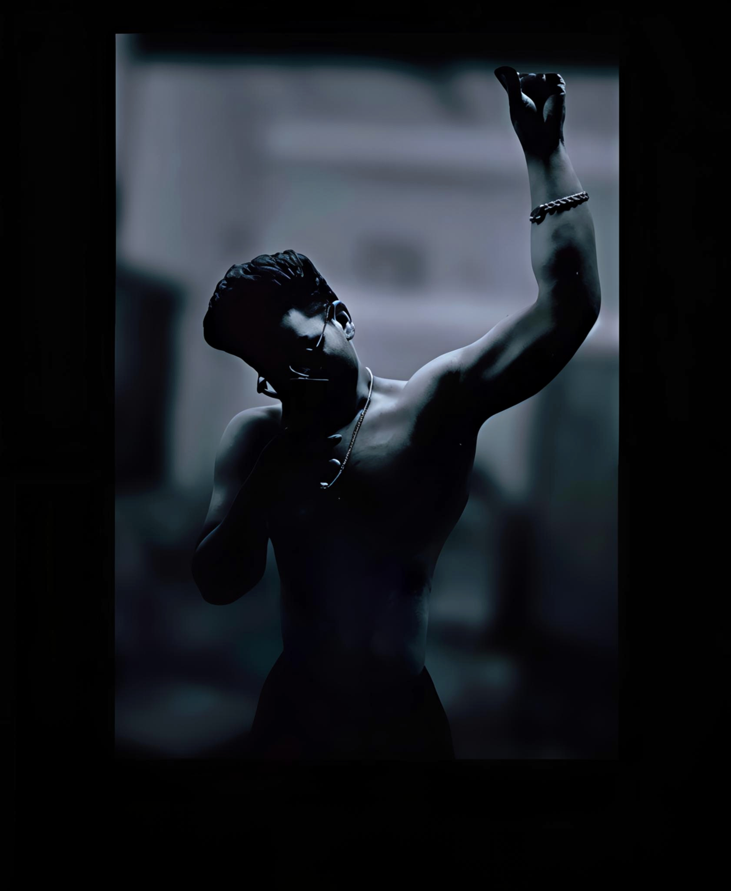

My Transformation Journey 🔥
Hi, this is Subhadip — the creator of this page, here to help you track and improve your fitness journey.
From 116 kg → 85kg | 31kg lost in 1 year
I didn’t wake up one day and become fit. I was 116 kg, struggling with consistency, motivation, and self-control. Many times I almost quit.
One day I realized — if I don’t change now, I never will. That moment hit me hard.
So I made one decision — just don’t stop. No shortcuts. No excuses. Just showing up every single day.
I trained 6–7 days every week. Even on days I didn’t feel like it — I still showed up.
I cut off junk food, fast food, and outside food. For 1 year — only home-cooked meals. No cheating.
I tracked my calories every single day. Not sometimes — every single day.
And slowly — discipline replaced motivation. That’s what changed everything.
After 1 year — I reached 85 kg. Not perfect. But stronger. More confident. More in control.
💬 If you think it’s hard — I thought the same.
But trust me — consistency beats everything.
And if I can do it — you can too. 🔥
I didn’t change in a day…
I changed when “I’ll do it tomorrow” became today. 🔥